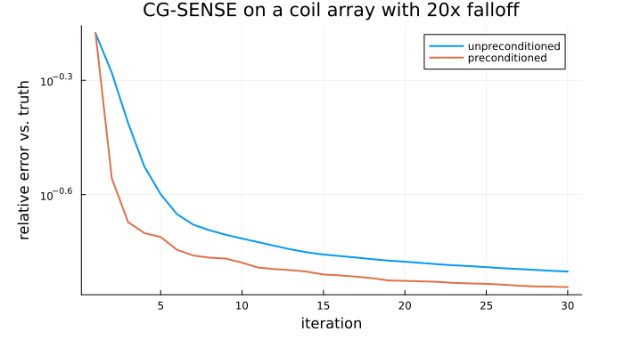
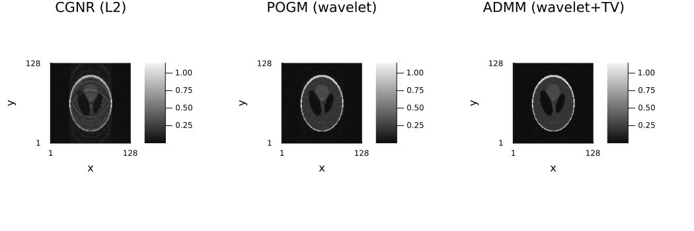
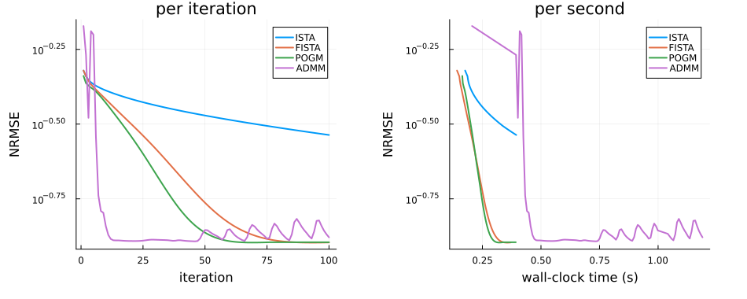
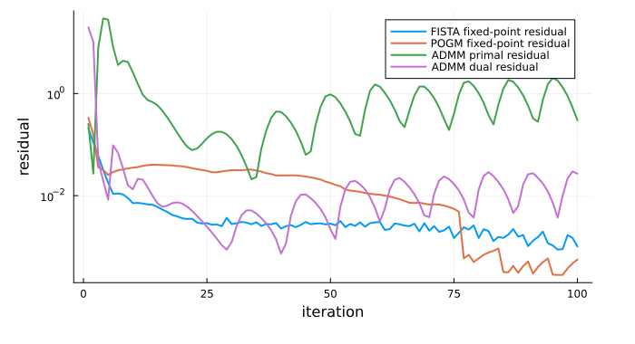

6 — Algorithms and configuration
Download this tutorial as a Jupyter notebook (with NotebookUtils.jl next to it).
Two knobs decide how a reconstruction runs: the method (what problem is solved, and with which solver) and the run configuration (scaling, output, threading, task splitting). Ristretto keeps them strictly separate — everything only a method can act on lives on the method, and ReconstructionConfig rejects such a keyword rather than silently ignoring it.
Contents
- Which solver, and why
- The solvers: CG/CGNR (and preconditioned CG-SENSE), ISTA/FISTA, POGM, ADMM, Douglas–Rachford
maxit,reltoland early stopping- Verbosity
- Data scaling
- Warm starts
- Operator-norm and normal-operator options
- Task splitting and threading
- A convergence comparison
ReconstructionConfigand run settings
using .NotebookUtils
using Ristretto
using Ristretto: DEFAULT_ALGORITHMS, get_encoding_operator
using GeometricMedicalPhantoms: create_shepp_logan_phantom, MRISheppLoganIntensities
using MIRTjim: jim
using Plots
using NamedDims
using Ristretto.ProximalAlgorithms: get_assumptions
using Ristretto.AbstractOperators: estimate_opnorm
using Random
Random.seed!(0);
nx, ny, nc = 128, 128, 8
x_true = create_shepp_logan_phantom(nx, ny, :axial; ti = MRISheppLoganIntensities(), eltype = ComplexF32)
x_noisy = x_true + 0.02f0 * randn(ComplexF32, nx, ny)
acq = AcquisitionInfo(;
is3D = false,
image_size = (nx, ny),
sensitivity_maps = coil_sensitivities(nx, ny, nc),
subsampling = create_sampling_pattern(
VariableDensitySampling(PolynomialDistribution(3), 4.0, 0.05), (nx, ny)
),
)
data = simulate_acquisition(x_noisy, acq; keep_sensitivity_maps = true)
nrmse1(x̂) = nrmse(x̂, x_true); # one-argument closure over the ground truth┌ Warning: simulate_acquisition: the phantom has the reconstruction's size 128×128, so the data are simulated with the operator that will reconstruct them (the inverse crime), and reconstructions look better than they would on measured data. Simulate from a finer, area-sampled phantom, e.g. 202×202; pass `inverse_crime_check = false` where the consistency is intended.
└ @ Ristretto ~/work/Ristretto.jl/Ristretto.jl/src/simulation/simulate_acquisition.jl:3131. Which solver, and why
IterativeReconstruction is handed a tuple of candidate algorithms and takes the first one whose assumptions the parsed problem satisfies. DEFAULT_ALGORITHMS is that tuple when you say nothing, and each entry declares the shape of model it can take — ProximalAlgorithms' get_assumptions is where those declarations live, so the table below is read off the solvers themselves rather than copied out of them.
In the shapes: ls(Ax - b) is a least-squares data term, f/g/gᵢ are arbitrary functions subject to the stated properties, and Bᵢ are linear operators (a regularizer's transform).
| algorithm | model shape | picked when |
|---|---|---|
| CG | ls(Ax - b) + optional L2, A square | least squares plus at most an L2 penalty, and 𝒜 maps image to image (single coil, fully sampled, or a KSpaceToImage model) |
| CGNR | ls(Ax - b) + optional L2, any A | the normal-equation form, so a rectangular 𝒜 is fine — this is where an unregularized or L2-only model lands |
| POGM | f(x) + g(x), g proximable | one smooth data term and exactly one term the parser can reduce to a single proximal map (wavelets, temporal Fourier, low rank); FISTA and ISTA take the same shape and are one keyword away |
| ADMM | f(x) + Σᵢ gᵢ(Bᵢx) | several regularizers, or one whose transform is not tight (finite differences), so the prox cannot be composed with it |
| Douglas–Rachford | g₁(x) + g₂(x), both proximable | two proximable terms and nothing smooth: data consistency as a constraint rather than a penalty |
get_assumptions is where each solver declares its own shape; the demonstration below reads the declarations straight off DEFAULT_ALGORITHMS rather than restating the table by hand.
for alg in DEFAULT_ALGORITHMS
println(nameof(typeof(alg).parameters[1]), ": ", get_assumptions(alg))
endCGIteration: λ * ‖x‖² + ls(Ax - b) where λ is scalar or array; and A is_linear, and is_square and b is array
CGNRIteration: λ * ‖x‖² + ls(Ax - b) where λ is scalar or array; and A is_linear and b is array
LimitedMemoryBFGSIteration: fᵢ(Lᵢx) where fᵢ is_smooth; and Lᵢ is_linear
POGMIteration: f(x) + g(x) where f is_smooth, and is_convex; and g is_proximable, and is_convex
ADMMIteration: ls(Ax - b) + gᵢ(Bᵢx) where A is_linear and b is array; and gᵢ is_proximable; and Bᵢ is_linear
DouglasRachfordIteration: f(x) + g(x) where f is_proximable; and g is_proximableTwo consequences worth spelling out:
- A model with no non-smooth term is a plain least-squares problem, so it reaches CG or CGNR — no step size, no proximal map, few iterations.
- A single non-smooth term reaches POGM only if the parser can evaluate its proximal map directly. That works when the term's operator has a diagonal normal operator (
is_AAc_diagonal— orthogonal and tight-frame transforms: wavelets, temporal Fourier), and fails for finite differences, which is why TV lands on ADMM.
2. The solvers
CGNR — smooth problems
Least squares with an optional quadratic penalty. No step size to tune, few iterations needed.
x_cgnr = reconstruct(
data, IterativeReconstruction(L2Image(1.0f-4); algorithm = CGNR(), maxit = 20)
)
println("CGNR NRMSE ", round(nrmse1(x_cgnr), digits = 4))CGNR NRMSE 0.3299Preconditioned CG-SENSE
CGNR is the one solver here that takes a preconditioner: CGNR(; P, P_is_inverse). Unregularized SENSE — solve $\mathcal{A}x = y$ in the least-squares sense, nothing else — is CG on the normal equations, and the natural preconditioner is the diagonal image-domain operator $P = 1/(\sum_c |S_c|^2 + \lambda)$: it approximates the inverse of the diagonal of $\mathcal{A}^H\mathcal{A}$, which at each pixel is dominated by the coil sensitivity energy there. Built as a DiagOp, it costs one elementwise divide per application.
It is worth reaching for exactly when the coil energy is non-uniform across the object. A surface-coil array with strong near/far falloff is the case: $\sum_c |S_c|^2$ then varies by orders of magnitude across the field of view, $\mathcal{A}^H\mathcal{A}$ is badly scaled from pixel to pixel, and CG spends its early iterations fixing that scaling instead of fixing the image. A diagonal preconditioner removes precisely that.
The converse is worth stating because it is the common case: on maps normalized so that $\sum_c |S_c|^2 \approx 1$ over the object — which is what coil_sensitivities produces, and what estimate_sensitivities produces on real data — $P$ is nearly constant where the image is, and preconditioning is close to a no-op. The point of preconditioning is convergence speed at the same accuracy, not a different answer, so the comparison below is error against iteration count — the same way §9 compares the solvers themselves.
using Ristretto.AbstractOperators: DiagOp
# The tutorial's own maps, multiplied by a smooth 20x falloff along x: a real image, a real
# sampling pattern, and a coil array with the geometry the preconditioner assumes.
maps_flat = coil_sensitivities(nx, ny, nc)
falloff = Float32[0.05f0 + 0.95f0 * exp(-3.0f0 * ((i - 1) / (nx - 1))^2) for i in 1:nx, _ in 1:ny]
maps_shaded = copy(maps_flat)
for c in axes(maps_shaded, 3)
@views maps_shaded[:, :, c] .*= falloff
end
energy_flat = dropdims(sum(abs2, maps_flat; dims = 3); dims = 3)
energy_shaded = dropdims(sum(abs2, maps_shaded; dims = 3); dims = 3)
support = abs.(x_true) .> 0.1maximum(abs, x_true)
println(
"coil-energy spread inside the object (max/min): normalized maps ",
round(maximum(energy_flat[support]) / minimum(energy_flat[support]), digits = 1),
"x, shaded array ", round(maximum(energy_shaded[support]) / minimum(energy_shaded[support]), digits = 1), "x"
)
acq_shaded = AcquisitionInfo(
nothing; is3D = false, image_size = (nx, ny), sensitivity_maps = maps_shaded,
subsampling = create_sampling_pattern(UniformRandomSampling(2.0), (nx, ny)),
)
data_shaded = simulate_acquisition(x_true, acq_shaded; keep_sensitivity_maps = true)CartesianAcquisitionInfo:
- kspace data = Array{ComplexF32}<128×64×8>
- encoding = 2D
- image size = 128×128
- sensitivity maps = ComplexF32<128×128×8>
- subsampling = (:, Vector{Bool}<128>)P_shaded = DiagOp(ComplexF32.(1 ./ (energy_shaded .+ 1.0f-2)))
rel_err(x̂) = nrmse(unname(x̂)[support], x_true[support])
trace_plain = IterationTrace(rel_err)
trace_precond = IterationTrace(rel_err)
reconstruct(
data_shaded,
IterativeReconstruction(
L2Image(1.0f-2); algorithm = CGNR(), maxit = 30, reltol = 0.0, on_iteration = trace_plain
)
)
reconstruct(
data_shaded,
IterativeReconstruction(
L2Image(1.0f-2); algorithm = CGNR(P = P_shaded, P_is_inverse = true), maxit = 30,
reltol = 0.0, on_iteration = trace_precond
)
)
# How many iterations each needs to reach the other's final accuracy — the number preconditioning
# is supposed to move.
target = trace_plain.values[end]
its_plain = findfirst(<=(target), trace_plain.values)
its_precond = findfirst(<=(target), trace_precond.values)
println("iterations to reach ", round(target, digits = 4), " relative error:")
println(" unpreconditioned ", its_plain, " preconditioned ", something(its_precond, "not reached"))
plot(
trace_plain.iterations, trace_plain.values; label = "unpreconditioned", lw = 2,
xlabel = "iteration", ylabel = "relative error vs. truth", yscale = :log10,
title = "CG-SENSE on a coil array with 20x falloff", size = (700, 400)
)
plot!(trace_precond.iterations, trace_precond.values; label = "preconditioned", lw = 2)
ISTA / FISTA — one non-smooth term
Proximal gradient, with (FISTA) and without (ISTA) Nesterov acceleration. The acceleration is free, so ISTA is never the default; both have to be named explicitly, because the proximal-gradient slot in DEFAULT_ALGORITHMS belongs to POGM (next section).
x_ista = reconstruct(
data, IterativeReconstruction(L1Wavelet2D(2.0f-3); algorithm = ISTA(), maxit = 50)
)
x_fista = reconstruct(
data, IterativeReconstruction(L1Wavelet2D(2.0f-3); algorithm = FISTA(), maxit = 50)
)
println("ISTA NRMSE ", round(nrmse1(x_ista), digits = 4))
println("FISTA NRMSE ", round(nrmse1(x_fista), digits = 4))ISTA NRMSE 0.3379
FISTA NRMSE 0.1725POGM — the same shape as FISTA, faster convergence rate
POGM (Proximal Optimized Gradient Method, Taylor 2018) accepts the same model shape as FISTA (smooth + one proximable term) at the same per-iteration cost, and its worst-case convergence rate on the smooth part is twice as fast. That is why it, rather than FISTA, holds the proximal-gradient slot in DEFAULT_ALGORITHMS — swapping in algorithm = FISTA() costs nothing but has no reason to be the default.
x_pogm = reconstruct(
data, IterativeReconstruction(L1Wavelet2D(2.0f-3); algorithm = POGM(), maxit = 50)
)
println("POGM NRMSE ", round(nrmse1(x_pogm), digits = 4))POGM NRMSE 0.1371ADMM — several terms, or a non-tight operator
Splits the problem into pieces with easy proximal maps. Slower per iteration, but it is what makes TV and multi-term models solvable.
x_admm = reconstruct(
data,
IterativeReconstruction(L1Wavelet2D(1.5f-3), TotalVariation2D(5.0f-4); algorithm = ADMM(), maxit = 50)
)
println("ADMM NRMSE ", round(nrmse1(x_admm), digits = 4))ADMM NRMSE 0.0845Douglas–Rachford — two proximable terms
The natural solver when data consistency is a constraint rather than a penalty: HardConsistency() projects onto $\{x : \mathcal{A}x = y\}$, and the regularizer supplies the second proximal map.
The NRMSE below is poor, and that is a property of the model, not of the solver: an equality constraint forces the reconstruction to reproduce the measured k-space including its noise, and under heavy SENSE undersampling the projection amplifies that noise along the directions where $\mathcal{A}\mathcal{A}^*$ is nearly singular. Tutorial 05 §4 measures this in detail (a better-converged projection makes it worse, not better) and says where HardConsistency does belong. Douglas–Rachford itself is fine — give it a model whose two proximal maps are well-conditioned.
x_dr = reconstruct(
data,
IterativeReconstruction(
L1Wavelet2D(2.0f-3);
fidelity = HardConsistency(maxit = 20), algorithm = DouglasRachford(), maxit = 40
)
)
println("DR + hard consistency NRMSE ", round(nrmse1(x_dr), digits = 4))DR + hard consistency NRMSE 0.1895side_by_side(
x_cgnr, x_pogm, x_admm;
titles = ("CGNR (L2)", "POGM (wavelet)", "ADMM (wavelet+TV)")
)
Letting Ristretto choose
The recommended form is to leave algorithm out entirely. The default tuple already covers every model this package can build, in a sensible order, and the choice then tracks whatever regularizers you happen to have combined.
x_auto = reconstruct(
data,
# no `algorithm`, and the same budget as the POGM run above, so the two are comparable term
# by term
IterativeReconstruction(L1Wavelet2D(2.0f-3); maxit = 50)
)
println("auto-selected NRMSE ", round(nrmse1(x_auto), digits = 4), " (equals POGM: ", x_auto ≈ x_pogm, ")")auto-selected NRMSE 0.1371 (equals POGM: true)Passing a tuple is the second-choice form, and it is for restricting or extending the candidate set rather than for picking a solver (a bare algorithm = POGM() does that).
Restrict when more than one default applies and you want the other one. An ℓ₁-wavelet model is accepted by POGM and by ADMM;
algorithm = (ADMM(),)keeps the automatic behaviour of erroring out on a model it cannot parse, while making sure the model that can go to POGM does not.Extend when the solver you want is not in the defaults.
ISTA()is not: the unaccelerated proximal gradient is only reachable by naming it. That matters when the proximal map changes from iteration to iteration —LocallyLowRank(; shift = :random)in tutorial 07 is the example — because momentum and line search both assume a fixed objective.ISTAis not in the defaults for a structural reason rather than an arbitrary one: the tuple is scanned in order and the first entry whose assumptions the model satisfies wins, so an entry declaring exactly what an earlier one declares can never be reached.ISTAandFISTAdeclare exactly whatPOGMdeclares. The same is true ofProximalAlgorithms'PANOCandZeroFPR(both below): they are worth reaching for by name —ZeroFPRin particular is often the fastest of the family on a well-scaled problem — but adding them to the defaults would add dead entries, not choices.
Nothing in either form is restricted to the names Ristretto re-exports: any ProximalAlgorithms iterable algorithm works, as long as its get_assumptions matches the parsed model — the same declaration the table in section 1 is read from. PANOC and ZeroFPR are the two worth knowing about, both quasi-Newton (L-BFGS) accelerations of forward-backward splitting that accept exactly the smooth-plus-prox shape POGM does. They spend more per iteration — a line search, and an L-BFGS buffer — and usually need far fewer of them.
x_forced = reconstruct(
data, IterativeReconstruction(L1Wavelet2D(2.0f-3); algorithm = (ADMM(),), maxit = 50)
)
x_extended = reconstruct(
data, IterativeReconstruction(L1Wavelet2D(2.0f-3); algorithm = (ISTA(), ADMM()), maxit = 50)
)
println("restricted to ADMM NRMSE ", round(nrmse1(x_forced), digits = 4))
println(
"extended with ISTA NRMSE ", round(nrmse1(x_extended), digits = 4),
" (equals ISTA: ", x_extended ≈ x_ista, ")"
)restricted to ADMM NRMSE 0.1398
extended with ISTA NRMSE 0.3379 (equals ISTA: true)using Ristretto.ProximalAlgorithms: PANOC, ZeroFPR
x_panoc = reconstruct(
data, IterativeReconstruction(L1Wavelet2D(2.0f-3); algorithm = PANOC(), maxit = 60)
)
x_zerofpr = reconstruct(
data, IterativeReconstruction(L1Wavelet2D(2.0f-3); algorithm = ZeroFPR(), maxit = 60)
)
println("PANOC NRMSE ", round(nrmse1(x_panoc), digits = 4))
println("ZeroFPR NRMSE ", round(nrmse1(x_zerofpr), digits = 4))PANOC NRMSE 0.1422
ZeroFPR NRMSE 0.12893. maxit, reltol and early stopping
Both belong to the method, because only a method has iterations.
maxitis the iteration budget — an upper bound on the work the solve may do, and the guarantee that it terminates. Default100.reltolis a relative tolerance that controls early stopping — how close to a fixed point the iterate must be before the solver stops ahead of the budget. Default1e-4.
The name is the point: Ristretto's tolerance is relative, ProximalAlgorithms' tol on the algorithm object is absolute, and Ristretto converts between them. The absolute threshold handed to the solver is
max(10 * eps(real(eltype(x₀))), reltol * maximum(abs, x₀))where x₀ is the initial guess (the direct reconstruction unless you pass one). reltol = 0 switches the test off entirely, which is what you want when comparing convergence curves. Because the two are different quantities under one name, they used to be easy to confuse; the method's keyword is reltol and the algorithm's is tol, and passing tol to IterativeReconstruction is an error rather than a silent misreading.
Note. Setting either to
nothingleaves the corresponding keyword out of thesolvecall altogether, so the algorithm's own value survives. That is the only wayalgorithm = FISTA(maxit = 500)becomes reachable: passed together with amaxiton the method, the method's value would be merged in last and overwrite it.
x_loose = reconstruct(data, IterativeReconstruction(L1Wavelet2D(2.0f-3); maxit = 200, reltol = 1.0f-3))
x_tight = reconstruct(data, IterativeReconstruction(L1Wavelet2D(2.0f-3); maxit = 200, reltol = 1.0f-6))
println("reltol 1e-3 NRMSE ", round(nrmse1(x_loose), digits = 4), " (stopped early)")
println("reltol 1e-6 NRMSE ", round(nrmse1(x_tight), digits = 4), " (ran further)")reltol 1e-3 NRMSE 0.1273 (stopped early)
reltol 1e-6 NRMSE 0.1273 (ran further)The looser tolerance gives the lower NRMSE, which is not a mistake: stopping early is itself a form of regularization, and the extra iterations the tighter run buys are spent fitting the noise the data term is asking it to fit. reltol controls how faithfully the objective is minimized; whether that objective's minimizer is the best image is λ's job.
# Defer to the algorithm's own iteration count.
x_alg = reconstruct(
data,
IterativeReconstruction(L1Wavelet2D(2.0f-3); algorithm = FISTA(maxit = 30), maxit = nothing)
)
println("algorithm-owned maxit: NRMSE ", round(nrmse1(x_alg), digits = 4))algorithm-owned maxit: NRMSE 0.262# Passing an iteration parameter to `reconstruct` is an error rather than being ignored.
try
reconstruct(data, IterativeReconstruction(L1Wavelet2D(2.0f-3)); maxit = 10)
catch e
println(sprint(showerror, e))
endArgumentError: `maxit` belongs to the reconstruction method, not `ReconstructionConfig`. Pass `maxit` to the reconstruction method instead, e.g. `IterativeReconstruction(reg; maxit = 50)` or `POCS(; maxit = 20)`.What early stopping actually tests
The quantity. Every solver compares one scalar against the threshold, and in each case it measures how far the iterate still is from a fixed point, not how good the image is:
| algorithm | quantity compared against the threshold |
|---|---|
| ISTA / FISTA / POGM | ‖x - z‖∞ / γ — the proximal-gradient step divided by the step size, i.e. the fixed-point residual |
| Douglas–Rachford | the same residual form, divided by its γ |
| ADMM | the iterate change ‖Δx‖, and the primal residual against reltol·εᵖʳⁱ, and the dual residual against reltol·εᵈᵘᵃ — all three must hold |
| CG / CGNR | ‖r‖₂, the norm of the (normal-equation) residual |
None of these is the objective value, and none of them is an error against a ground truth — the solver has no ground truth. A small residual says the iterate has stopped moving; whether that point is a good image is the regularizer's business, not the tolerance's.
When it is evaluated. At the end of every iteration, after the update has been applied and after any on_iteration callback has fired, and before the next iteration begins. The check is k >= maxit || stop(iter, state), so the budget is tested first and the two can coincide.
Why relative to maximum(abs, x₀). The residual carries the units of the image. The same absolute number means "converged" for data scaled so that the image peaks near 1, and "nowhere near" for raw scanner data peaking at 10⁶. Dividing by the initial estimate's own peak turns reltol into a fraction of the image's dynamic range, so a reltol tuned on one dataset transfers to the next. The 10 * eps floor stops the threshold from dropping below the level where the residual is floating-point noise and the test could never pass.
When it never triggers. Nothing happens: the loop runs the full maxit and returns the last iterate. There is no warning and no error — it is a perfectly ordinary outcome — but it means the budget, not the tolerance, decided the answer, and a larger maxit would have changed it.
Telling the two apart from the output. Verbose prints one row every freq iterations and always one final row at the iteration the loop actually stopped on. Read the iteration index in that last row: equal to maxit means the budget ran out; smaller than maxit — and usually off the printing grid — means the tolerance fired.
println("reltol = 1e-3, maxit = 200 — watch the last row's index:")
reconstruct(
data, IterativeReconstruction(L1Wavelet2D(2.0f-3); maxit = 200, reltol = 1.0f-3);
verbosity = Verbose(; timing = false)
);reltol = 1e-3, maxit = 200 — watch the last row's index:
| f(x) | g(z) | ‖x - z‖/γ
------|-----------|-----------|-----------
10 | 6.413e-01 | 3.562e+00 | 3.535e-02
20 | 1.759e-01 | 3.312e+00 | 3.752e-02
30 | 1.273e-01 | 3.121e+00 | 3.144e-02
40 | 1.097e-01 | 3.037e+00 | 2.489e-02
50 | 1.010e-01 | 3.015e+00 | 1.764e-02
60 | 9.881e-02 | 3.010e+00 | 1.042e-02
70 | 9.836e-02 | 3.008e+00 | 6.684e-03
77 | 9.869e-02 | 3.007e+00 | 5.901e-04println("reltol = 0, maxit = 20 — the tolerance is switched off, so the budget decides:")
reconstruct(
data, IterativeReconstruction(L1Wavelet2D(2.0f-3); maxit = 20, reltol = 0.0);
verbosity = Verbose(; timing = false, freq = 5)
);reltol = 0, maxit = 20 — the tolerance is switched off, so the budget decides:
| f(x) | g(z) | ‖x - z‖/γ
------|-----------|-----------|-----------
5 | 1.488e+00 | 3.669e+00 | 2.546e-02
10 | 6.413e-01 | 3.562e+00 | 3.535e-02
15 | 2.686e-01 | 3.440e+00 | 4.013e-02
20 | 1.759e-01 | 3.312e+00 | 3.752e-024. Verbosity
Three mutually exclusive output modes, given to reconstruct (they are run settings, not method parameters). verbosity also accepts the symbols :silent, :progress and :verbose as shorthands for the three. There are three modes and not two, so there is no boolean form: true would not say which of ProgressBar() and Verbose() was meant, and it is rejected.
Silent() is the default: a reconstruction prints nothing unless it is asked to, which is why the cells in this tutorial pass verbosity only where the output is the point — the two early-stopping runs in §3, and the cells below.
reconstruct(data, IterativeReconstruction(L2Image(1.0f-4); maxit = 5); verbosity = :silent); # the default, via the shorthandreconstruct(data, IterativeReconstruction(L2Image(1.0f-4); maxit = 5); verbosity = ProgressBar());freq is optional. Left out, Ristretto derives a printing frequency from the method's maxit (roughly twenty rows over the run, rounded to one of 1, 5, 10, 20, 50, 100), which is what you want almost always. Pass it only to override that: freq = 1 for every iteration, freq = 0 for a single end-of-run summary line, freq = -1 to drop the solver's output while keeping Ristretto's own phase log.
println("--- Verbose(): frequency chosen from maxit = 60 ---")
reconstruct(data, IterativeReconstruction(L1Wavelet2D(2.0f-3); maxit = 60); verbosity = Verbose(; timing = false));--- Verbose(): frequency chosen from maxit = 60 ---
| f(x) | g(z) | ‖x - z‖/γ
------|-----------|-----------|-----------
5 | 1.488e+00 | 3.669e+00 | 2.546e-02
10 | 6.413e-01 | 3.562e+00 | 3.535e-02
15 | 2.686e-01 | 3.440e+00 | 4.013e-02
20 | 1.759e-01 | 3.312e+00 | 3.752e-02
25 | 1.456e-01 | 3.201e+00 | 3.057e-02
30 | 1.273e-01 | 3.121e+00 | 3.144e-02
35 | 1.166e-01 | 3.068e+00 | 3.108e-02
40 | 1.097e-01 | 3.037e+00 | 2.489e-02
45 | 1.043e-01 | 3.022e+00 | 2.368e-02
50 | 1.010e-01 | 3.015e+00 | 1.764e-02
55 | 9.931e-02 | 3.012e+00 | 1.225e-02
60 | 9.881e-02 | 3.010e+00 | 1.042e-02println("--- Verbose(; freq = 1): overridden, every iteration ---")
reconstruct(data, IterativeReconstruction(L2Image(1.0f-4); maxit = 5); verbosity = Verbose(; freq = 1, timing = false));--- Verbose(; freq = 1): overridden, every iteration ---
| ‖Aᴴb - (AᴴA + λI)x‖ | λ‖x‖²
------|---------------------|-----------
1 | 4.718e+00 | 2.988e-05
2 | 1.950e+00 | 3.616e-05
3 | 5.166e-01 | 3.724e-05
4 | 4.447e-01 | 3.758e-05
5 | 4.664e-01 | 3.826e-05# The log can be redirected anywhere — here into a vector, e.g. for a dashboard or a test.
messages = String[]
reconstruct(
data, IterativeReconstruction(L2Image(1.0f-4); maxit = 5);
verbosity = Verbose(; printfunc = (args...) -> push!(messages, string(args...)))
)
println(length(messages), " messages captured; first: ", first(messages))20 messages captured; first: Constructing encoding operator: 884.82 µs (1.47 k allocations: 6.232 MiB)5. Data scaling
The absolute magnitude of the k-space is not neutral, for two reasons that have nothing to do with each other:
- λ is scale-dependent. The objective is $\tfrac12\|\mathcal{A}x - y\|^2 + \lambda R(x)$. Multiply the data by $c$ and the data term grows like $c^2$ while an ℓ₁-type $R$ grows like $c$, so the balance between them moves and the λ you tuned no longer means the same thing. Bringing every dataset to a common scale first is what makes a λ transferable between scans, scanners and vendors.
- The arithmetic has finite range. These reconstructions run in
Float32, and the data term squares whatever comes off the scanner; raw k-space that lives around1e-6or1e6spends that range on the exponent instead of on the image.
The stopping tolerance, by contrast, is already scale-free: it is relative to maximum(abs, x₀) (§3), so it needs no help from the scaling.
QuantileScaling, the default, divides by the 99th percentile of the direct reconstruction's magnitude; BartScaling divides by its 90th percentile or its maximum (the convention BART uses), MeasurementBasedScaling derives the factor from the measurements, FixedScaling takes a number you supply, and NoScaling leaves the data alone. The reconstruction guide lists the others and how they compare. The output is scaled back unless you ask otherwise, so the choice does not change the units you get out — it changes the units the solver works in, and therefore what λ means.
for scaling in (NoScaling(), QuantileScaling(), BartScaling(), MeasurementBasedScaling())
x̂ = reconstruct(
data, IterativeReconstruction(L1Wavelet2D(2.0f-3); maxit = 40);
scaling = scaling
)
println(
rpad(string(typeof(scaling).name.name), 24), " NRMSE ", round(nrmse1(x̂), digits = 4),
" max|x| ", round(maximum(abs, x̂), digits = 3)
)
endNoScaling NRMSE 0.135 max|x| 1.15
QuantileScaling NRMSE 0.1636 max|x| 1.132
BartScaling NRMSE 0.1347 max|x| 1.15
MeasurementBasedScaling NRMSE 0.183 max|x| 1.172The spread is small here because the simulated data is already close to unit scale, so there is little for a scaling to fix. Multiply the k-space by 1000 — the kind of factor that separates one scanner's raw units from another's — and point 1 becomes unmissable: with NoScaling the same λ now under-regularizes badly, while QuantileScaling returns bit-for-bit the reconstruction it gave on the original data.
for factor in (1.0f0, 1.0f3)
data_scaled = AcquisitionInfo(data; kspace_data = data.kspace_data .* factor)
for scaling in (NoScaling(), QuantileScaling())
x̂ = reconstruct(
data_scaled, IterativeReconstruction(L1Wavelet2D(2.0f-3); maxit = 40);
scaling = scaling
)
println(
"k-space × ", rpad(factor, 8), rpad(string(typeof(scaling).name.name), 14),
" NRMSE ", round(nrmse1(x̂ ./ factor), digits = 5)
)
end
endk-space × 1.0 NoScaling NRMSE 0.13496
k-space × 1.0 QuantileScaling NRMSE 0.16356
k-space × 1000.0 NoScaling NRMSE 0.36862
k-space × 1000.0 QuantileScaling NRMSE 0.16356# Keep the internally scaled units instead of mapping back.
x_scaled_back = reconstruct(
data, IterativeReconstruction(L1Wavelet2D(2.0f-3); maxit = 40);
scaling = BartScaling()
)
x_unscaled = reconstruct(
data, IterativeReconstruction(L1Wavelet2D(2.0f-3); maxit = 40);
scaling = BartScaling(), disable_inverse_scale_output = true
)
println("max|x| scaled back: ", round(maximum(abs, x_scaled_back), digits = 3))
println("max|x| left scaled: ", round(maximum(abs, x_unscaled), digits = 3))max|x| scaled back: 1.15
max|x| left scaled: 1.136. Warm starts
x₀ seeds the solver. Useful for parameter sweeps, staged reconstructions, and the non-convex terms whose result depends on where they start. It is also what the stopping threshold is measured against (§3), so a warm start changes the tolerance as well as the starting point.
x_stage1 = reconstruct(data, IterativeReconstruction(L1Wavelet2D(5.0f-3); maxit = 40))
x_stage2 = reconstruct(
data, IterativeReconstruction(L1Wavelet2D(1.0f-3); maxit = 40); x₀ = x_stage1
)
println("stage 1 NRMSE ", round(nrmse1(x_stage1), digits = 4))
println("stage 2 NRMSE ", round(nrmse1(x_stage2), digits = 4))stage 1 NRMSE 0.1331
stage 2 NRMSE 0.13237. Operator-norm and normal-operator options
What ‖𝒜‖ is used for
Ristretto asks estimate_opnorm for a value that is certified not to fall below $\|\mathcal{A}\|$ — a power iteration, which converges from below, paired with a closed-form upper bound — and hands the algorithm $L_f = n\|\mathcal{A}\|^2$ — the Lipschitz constant of the data term's gradient, with $n$ the number of optimization variables (one, unless the model has Components). It does not rescale $\mathcal{A}$: that used to be the implementation, and it silently multiplied the effective λ and the returned image by $\|\mathcal{A}\|$. λ therefore means what it says, in the data's own units.
Which algorithms actually need it
| algorithm | needs Lf? | what it uses it for |
|---|---|---|
| ISTA / FISTA / POGM | yes | the step size γ = 1/Lf; without it the algorithm backtracks to find one |
| Douglas–Rachford | yes | its default γ = 1/Lf |
| ADMM | no | its step is the penalty ρ, chosen adaptively; Lf is discarded |
| CG / CGNR | no | Krylov methods are scale invariant and derive everything themselves |
Ristretto skips the estimate where it can prove nothing needs it — a pure, unregularized CG/CGNR solve, which instead scales its warm start with a one-application Rayleigh-quotient proxy. Everything else computes it, including ADMM, and that is not the waste it looks like: $L$ is used for a second purpose the table above does not list. The default warm start is one Landweber step, $x_0 = \mathcal{A}^*y/L^2$, because the bare adjoint is only on the image's scale when $\mathcal{A}^*\mathcal{A} \approx I$. So an ADMM run spends the estimate on the starting point rather than on a step size — and switching it off makes that run slower, not faster, because the badly-scaled warm start costs more iterations than the estimate costs milliseconds. The cell below measures exactly that.
𝒜 = get_encoding_operator(data)
estimate_opnorm(𝒜) # warm up
t_estimate = minimum(@elapsed(estimate_opnorm(𝒜)) for _ in 1:5)
println("the operator-norm estimate costs ", round(1000 * t_estimate, digits = 1), " ms")
for kwargs in ((;), (; disable_operator_normalization = true))
m = IterativeReconstruction(TotalVariation2D(5.0f-4); algorithm = ADMM(), maxit = 30, kwargs...)
x̂ = reconstruct(data, m) # warm up
t = minimum(@elapsed(reconstruct(data, m)) for _ in 1:3)
println(
rpad(isempty(kwargs) ? "ADMM, default" : "ADMM, no estimate", 20),
" NRMSE ", round(nrmse1(x̂), digits = 5), " ", round(t, digits = 3), " s"
)
endthe operator-norm estimate costs 2.9 ms
ADMM, default NRMSE 0.07164 0.199 s
ADMM, no estimate NRMSE 0.07164 0.2 sThe three options
exact_opnorm = true — replace estimate_opnorm with LinearAlgebra.opnorm, run to convergence. Costs a longer setup: the iteration keeps applying $\mathcal{A}$ and $\mathcal{A}^*$ until it stops moving, instead of stopping as soon as the certified interval is within rel_margin. Reach for it when you need the true constant rather than a certified bound — estimate_opnorm returns the upper end of that interval, so 1/Lf is a slightly smaller step than the true norm would give, which costs convergence rate but never safety.
Supplying the constant yourself — disable_operator_normalization is not the only alternative to estimating. Because Ristretto fills Lf in only when the algorithm does not already carry one, an Lf you pass to the algorithm wins; combine it with disable_operator_normalization = true and the estimate is skipped as well. Costs nothing, and reach for it whenever you already know $\|\mathcal{A}\|$ — a parameter sweep over λ on one fixed operator computes it once and reuses it.
disable_operator_normalization = true — skip the estimate and pass no Lf. The forward-backward iteration then switches to adaptive = true: it seeds γ from its own cheap lower bound on the smoothness constant and re-checks a descent condition every iteration, halving γ whenever the check fails. Costs one extra evaluation of the smooth term per iteration — the descent check — rather than one power iteration up front, so it trades a fixed setup cost for a per-iteration one. Reach for it for an operator whose norm you cannot estimate cheaply, or to check that a suspicious step size is not the cause of a bad reconstruction. For CG, CGNR and ADMM the setting is a no-op as far as the solve is concerned — they never use Lf — so it only saves the estimate those runs would have discarded anyway.
The normal-operator substitution is not a switch at all, but it is worth knowing about because it decides how much a gradient costs. The model always carries the plain least-squares term ls(𝒜x - y); when the problem is handed to a solver, the term's gradient is rewritten to go through $\mathcal{A}^*\mathcal{A}$ wherever that product has an implementation cheaper than applying $\mathcal{A}$ and then $\mathcal{A}^*$ — which the FFT- and NFFT-based encoding operators do have. Both forms do one forward-and-adjoint's worth of work per gradient: the plain one forms the residual $r = \mathcal{A}x - y$, takes $\|r\|^2$ for the value and $\mathcal{A}^*r$ for the gradient. What the substitution buys is that the composed operator can be cheaper than its two factors run back to back — for an NFFT it is a Toeplitz embedding, one FFT pair on a padded grid instead of two gridding passes — and that it recovers the value from the gradient instead of applying $\mathcal{A}$ again. On a Cartesian FFT there is little to collapse and the saving is a few per cent; on a radial NFFT it is a large fraction of the run.
One consequence to keep in mind when reading a printed objective: the substituted form never applies $\mathcal{A}$ a second time, so its value is the potential of the gradient it already computed. With Ristretto's BACKWARD-normalized Fourier operator $\mathcal{A}^*$ is the inverse rather than the true adjoint, so that potential is $\tfrac12\|\mathcal{A}x - y\|^2 / \sigma$ with $\sigma = N$ — the right quantity for the solver and for a line search, but scaled if you wanted to read off $\tfrac12\|\mathcal{A}x - y\|^2$ itself.
# `Lf = n‖𝒜‖²` with n = 1: computed once here (the same `𝒜` as above), then handed to the
# algorithm.
L = estimate_opnorm(𝒜)
println("‖A‖ = ", round(L, digits = 6))
x_default = reconstruct(data, IterativeReconstruction(L1Wavelet2D(2.0f-3); maxit = 40))
x_manual = reconstruct(
data,
IterativeReconstruction(
L1Wavelet2D(2.0f-3);
algorithm = POGM(Lf = L^2), disable_operator_normalization = true, maxit = 40
)
)
println("hand-supplied Lf reproduces the default run exactly: ", x_manual ≈ x_default)‖A‖ = 1.0
hand-supplied Lf reproduces the default run exactly: true# The three options on the Cartesian problem this tutorial has used throughout.
function compare_options(acq_data, err; maxit = 40)
for (label, kwargs) in (
("default", (;)),
("exact_opnorm", (; exact_opnorm = true)),
("no normalization", (; disable_operator_normalization = true)),
)
m = IterativeReconstruction(L1Wavelet2D(2.0f-3); maxit, kwargs...)
reconstruct(acq_data, m) # warm up
t = minimum(@elapsed(reconstruct(acq_data, m)) for _ in 1:3)
x̂ = reconstruct(acq_data, m)
println(rpad(label, 20), " NRMSE ", round(err(x̂), digits = 5), " ", round(t, digits = 3), " s")
end
return nothing
end
println("--- Cartesian, 128², 8 coils ---")
compare_options(data, nrmse1)--- Cartesian, 128², 8 coils ---
default NRMSE 0.16356 0.096 s
exact_opnorm NRMSE 0.16356 0.145 s
no normalization NRMSE 0.1624 0.104 sThe same three options on a non-Cartesian acquisition — radial, 200 golden-angle spokes of 256 samples over the same phantom and coils (tutorial 08 is where non-Cartesian encoding is covered properly). This is also where the normal-operator substitution stops being a footnote: for an NFFT the normal operator is a Toeplitz embedding, one FFT pair on a padded grid, where running $\mathcal{A}$ and $\mathcal{A}^*$ separately means two full gridding passes instead.
traj_no = radial_trajectory(256, 200; ordering = GoldenAngle())
acq_noncart = AcquisitionInfo(;
trajectory = traj_no, image_size = (nx, ny),
sensitivity_maps = coil_sensitivities(nx, ny, nc),
)
data_noncart = simulate_acquisition(x_noisy, acq_noncart; keep_sensitivity_maps = true)
println("--- non-Cartesian, 200 radial spokes ---")
compare_options(data_noncart, nrmse1; maxit = 30)┌ Warning: simulate_acquisition: the phantom has the reconstruction's size 128×128, so the data are simulated with the operator that will reconstruct them (the inverse crime), and reconstructions look better than they would on measured data. Simulate from a finer, area-sampled phantom, e.g. 202×202; pass `inverse_crime_check = false` where the consistency is intended.
└ @ Ristretto ~/work/Ristretto.jl/Ristretto.jl/src/simulation/simulate_acquisition.jl:313
--- non-Cartesian, 200 radial spokes ---
default NRMSE 0.30839 0.6 s
exact_opnorm NRMSE 0.30828 0.679 s
no normalization NRMSE 9718.743 0.807 sSeveral rows in those two tables are worth explaining, because none of them is obvious. (Wall-clock timings vary from run to run; the reasons below are the part to keep.)
Why the per-iteration cost differs so much between the two acquisitions. Cartesian: the normal operator is a masked FFT pair, which is what $\mathcal{A}$ then $\mathcal{A}^*$ already costs, so the substitution saves only the second value computation — a few per cent. Radial: the NFFT's normal operator is a Toeplitz embedding, a single FFT pair on a padded grid, against two full gridding passes with their interpolation kernels — so it removes a large fraction of the per-iteration cost. The substitution is a footnote on Cartesian data and a large win on non-Cartesian data, which is why it is applied wherever the operator supports it.
Why exact_opnorm costs so much wall-clock time. Not because of the iterations — maxit is unchanged — but because of the setup. The estimate took a few tens of milliseconds in the cell above; running the power iteration to convergence takes roughly an order of magnitude longer, while the whole 40-iteration solve is only a couple of hundred milliseconds. The setup, not the solve, is what grew.
Why "no normalization" costs extra time too, and where it goes. Not to a longer setup — there is none — but to the loop. Without Lf the iteration runs in adaptive mode and performs a descent check every iteration, one extra evaluation of the smooth term each time. On the Cartesian problem the check always passes and γ never actually shrinks (it stays close to the 1/Lf the estimate would have given), so the price is paid for information Ristretto could have supplied once.
Why "no normalization" is a catastrophe on the radial problem, and what it is really telling you. That row's NRMSE is not a typo and it is not the solver failing: ‖𝒜‖ is used for a second purpose, the default warm start x₀ = 𝒜*y/L², and switching the estimate off switches that scaling off with it. For a Cartesian FFT 𝒜*y is already roughly on the image's scale and nothing much happens. For an uncompensated radial NFFT it is not: here ‖𝒜*y‖ ≈ 5.2e7 against ‖x‖ ≈ 25, six orders of magnitude out, and thirty iterations starting from there get nowhere near the solution. FISTA does exactly as badly, so this is not about which solver is in the slot. The lesson is that disable_operator_normalization is not a pure "skip an estimate" switch on non-Cartesian data — it also removes the one Landweber step that makes the adjoint a usable starting point — and if that is what you want, supply x₀ yourself.
Why the two settings differ in NRMSE at this budget. Neither converges to a worse image — they converge to the same one, at slightly different rates. The two calls return slightly different numbers for ‖𝒜‖: estimate_opnorm returns the upper end of a certified interval, while LinearAlgebra.opnorm iterates a power method that approaches the norm from below. The larger of the two makes Lf larger and therefore γ = 1/Lf smaller, and a smaller step means less progress per iteration, so at a truncated maxit = 40 it lands a little further back along the same trajectory. λ is not involved: since ‖𝒜‖ no longer rescales 𝒜, the objective being minimized is identical in both runs. The cell below checks that directly by giving both enough iterations to converge.
for (label, kwargs) in (("default", (;)), ("exact_opnorm", (; exact_opnorm = true)))
x̂ = reconstruct(
data, IterativeReconstruction(L1Wavelet2D(2.0f-3); maxit = 300, reltol = 0.0, kwargs...)
)
println(rpad(label, 14), " NRMSE after 300 iterations ", round(nrmse1(x̂), digits = 5))
enddefault NRMSE after 300 iterations 0.12729
exact_opnorm NRMSE after 300 iterations 0.127158. Task splitting and threading
When the data has batch dimensions that nothing couples — slices, contrasts, echoes, or time if there is no temporal regularizer — reconstruct splits the problem into one independent solve per batch element and runs them in parallel. This is task splitting, and it is a run setting: task_executor chooses how the tasks are run, disable_task_splitting turns the whole mechanism off.
(Do not confuse it with image decomposition — Component, L+S — which splits one image into additive parts inside a single solve. Tutorial 07 covers that.)
n_ms, nslices, nc_ms = 128, 32, 4
vol = create_shepp_logan_phantom(n_ms, n_ms, nslices; ti = MRISheppLoganIntensities(), eltype = ComplexF32)
smaps_ms = NamedDimsArray{(:x, :y, :coil)}(coil_sensitivities(n_ms, n_ms, nc_ms))
acq_ms = AcquisitionInfo(
NamedDimsArray{(:kx, :ky, :coil, :slice)}(zeros(ComplexF32, n_ms, n_ms, nc_ms, nslices));
is3D = false, sensitivity_maps = smaps_ms
)
data_ms = simulate_acquisition(NamedDimsArray{(:x, :y, :slice)}(vol), acq_ms; keep_sensitivity_maps = true)
println("multi-slice k-space: ", size(data_ms.kspace_data), " ", dimnames(data_ms.kspace_data))
println("Julia threads: ", Threads.nthreads())┌ Warning: simulate_acquisition: the phantom has the reconstruction's size 128×128, so the data are simulated with the operator that will reconstruct them (the inverse crime), and reconstructions look better than they would on measured data. Simulate from a finer, area-sampled phantom, e.g. 202×202; pass `inverse_crime_check = false` where the consistency is intended.
└ @ Ristretto ~/work/Ristretto.jl/Ristretto.jl/src/simulation/simulate_acquisition.jl:313
multi-slice k-space: (128, 128, 4, 32) (:kx, :ky, :coil, :slice)
Julia threads: 232 slices of 128² with 4 coils, 150 proximal-gradient iterations each: large enough that the per-slice solve dominates the fork/join overhead, which a 64² × 8-slice problem does not.
Wall-clock timings vary from run to run, so each configuration below is measured three times and the best time is reported; treat the ratios, not the absolute seconds, as the result.
method_ms = IterativeReconstruction(L1Wavelet2D(2.0f-3); maxit = 150, reltol = 0.0)
warmup_ms = IterativeReconstruction(L1Wavelet2D(2.0f-3); maxit = 2)
function best_of(kwargs; reps = 3)
reconstruct(data_ms, warmup_ms; kwargs...) # compile everything first
times = Float64[]
local x̂
for _ in 1:reps
push!(times, @elapsed x̂ = reconstruct(data_ms, method_ms; kwargs...))
end
return minimum(times), x̂
end
t_par, x_par = best_of((; task_executor = MultiThreadingExecutor()))
t_seq, x_seq = best_of((; task_executor = SequentialExecutor()))
t_none, x_none = best_of((; disable_task_splitting = true))
println("split, threaded over slices : ", round(t_par, digits = 2), " s")
println("split, one slice at a time : ", round(t_seq, digits = 2), " s (", round(t_seq / t_par, digits = 2), "× slower)")
println("not split at all : ", round(t_none, digits = 2), " s (", round(t_none / t_par, digits = 2), "× slower)")
println("same answer all three: ", x_par ≈ x_seq && x_par ≈ x_none)split, threaded over slices : 3.92 s
split, one slice at a time : 6.31 s (1.61× slower)
not split at all : 5.39 s (1.37× slower)
same answer all three: trueThe unsplit run is the slowest of the three even though it is doing the same arithmetic: it solves one big problem whose iterate is the whole stack, so every slice is dragged along until the last one converges, and the operators work on 32× larger arrays.
Splitting can change the numbers slightly. The three runs above agree because
reltol = 0.0pins every configuration to exactly 150 iterations. With a real stopping tolerance they need not: a split run evaluates the stopping criterion per slice, so each slice stops at its own iteration count, while an unsplit run tests one criterion on the whole stack and gives every slice the same number of iterations — the count the slowest-converging slice demands. Neither is wrong, and both are converged to the requested tolerance; they simply do not have to be bit-identical.
Which dimensions can be split
get_affected_dims(reg, acq_or_nothing, image_dims) is the interface function that decides this, and it is what a custom regularizer implements. The rule is a single line of get_task_splitting_plan: start from the non-Fourier image dimensions and remove every dimension any term in the model affects. What is left over is split.
using Ristretto: get_affected_dims
image_dims = (:x, :y, :slice, :time)
batch_dims = (:slice, :time) # the non-Fourier dimensions of this layout
regularizers = (
L1Image(1.0f-3),
L1Wavelet2D(1.0f-3),
TotalVariation2D(1.0f-3),
NonNegative(),
L1Wavelet3D(1.0f-3),
TotalVariation3D(1.0f-3),
L1TemporalFourier(1.0f-2; time_dim = :time),
TemporalTotalVariation(1.0f-2; time_dim = :time),
LowRank(1.0f-1; time_dim = :time),
LocallyLowRank(1.0f-1; block_size = 8, time_dim = :time),
L0Image(; count = 200),
)
println(rpad("regularizer", 26), rpad("couples", 26), "leaves splittable")
println(repeat("-", 78))
for reg in regularizers
coupled = get_affected_dims(reg, nothing, image_dims)
splittable = Tuple(d for d in batch_dims if d ∉ coupled)
println(
rpad(string(typeof(reg).name.name), 26),
rpad(isempty(coupled) ? "(nothing)" : string(coupled), 26),
isempty(splittable) ? "(nothing)" : string(splittable)
)
endregularizer couples leaves splittable
------------------------------------------------------------------------------
L1Image (nothing) (:slice, :time)
L1Wavelet2D (:x, :y) (:slice, :time)
TotalVariation2D (:x, :y) (:slice, :time)
NonNegative (nothing) (:slice, :time)
L1Wavelet3D (:x, :y, :slice) (:time,)
TotalVariation3D (:x, :y, :slice) (:time,)
L1TemporalFourier (:time,) (:slice,)
TemporalTotalVariation (:time,) (:slice,)
LowRank (:x, :y, :slice, :time) (nothing)
LocallyLowRank (:x, :y, :slice, :time) (nothing)
L0Image (:x, :y, :slice, :time) (nothing)Reading the rows, and why each one couples what it does:
| term | couples | because |
|---|---|---|
L1Image, NonNegative | nothing at all | the penalty is a sum over voxels; every voxel is independent of every other, so both :slice and :time stay splittable |
L1Wavelet2D, TotalVariation2D | :x, :y | a 2D transform mixes neighbouring pixels within a frame, and nothing across frames |
L1Wavelet3D, TotalVariation3D | :x, :y, :slice | the third axis of the transform is the slice axis, so slices can no longer be solved apart — :time still can |
L1TemporalFourier, TemporalTotalVariation | :time | the penalty is defined on differences (or a Fourier transform) along time, so a frame's value constrains its neighbours' — slices stay independent |
LowRank, LocallyLowRank | everything | the Casorati matrix is space × time; a nuclear norm on it is a joint property of all voxels and all frames at once, and cannot be evaluated on a piece of it |
L0Image(; count = k) | everything | a budget of k non-zeros is a statement about the whole coefficient array — split it in two and each half would get its own budget of k. The threshold form, L0Image(; threshold = λ), is a per-voxel test and couples nothing |
Note that the coupled dimensions include image dimensions like :x and :y. Those were never candidates for splitting in the first place (they are Fourier-encoded), so a 2D regularizer leaves both batch dimensions free.
Threading notes
Ristretto parallelizes across slices and keeps each slice's work single-threaded, because a 128² slice is small enough that splitting it costs more than it saves; a low-rank prox, whose SVDs are level-3 BLAS, is the documented exception and keeps its threaded budget. The library-level thread pools underneath (BLAS, FFTW, NFFT) are managed for you during the solve — do not call BLAS.set_num_threads yourself.
Two things are yours to set:
julia -t NwithN= the number of physical cores you actually have (and, on Slurm,--cpus-per-taskto match, plus an explicit--mem).export KMP_BLOCKTIME=0before starting Julia, if you use MKL. It cannot be set from inside Julia, and without it MKL's spinning worker threads crowd out the reconstruction.
FFTW plans each transform before its first use, either instantly from a heuristic or by timing candidate algorithms (0.1–0.2 s per 2D transform), whose plans run up to several times faster. Ristretto picks one from the problem size, algorithm and iteration count; when you will reconstruct the same acquisition many times — this tutorial does — fft_planning = :measure pays the timing once and every later reconstruction reuses the plans.
using LinearAlgebra: BLAS
using FFTW
@show Threads.nthreads()
@show BLAS.get_num_threads()
@show FFTW.get_num_threads()
@show get(ENV, "KMP_BLOCKTIME", "unset")
@show Ristretto.serial_blas_threshold_bytes()167772169. A convergence comparison
on_iteration calls back once per solver iteration with the current image estimate, already inverse-scaled and in the shape reconstruct will return. IterationTrace(reduction) is the collector to use: it applies reduction to that estimate and records the result together with the iteration index and a wall-clock reading from a monotonic clock started after the operator build and the operator-norm estimate. Four runs, four traces, and the NRMSE is computed after every single iteration rather than by re-solving at a ladder of budgets.
reltol = 0 matters here: with the default tolerance a solver would stop early and truncate its own curve.
# Warm up first, so the traced timings below measure the solve and not first-call compilation.
for alg in (ISTA(), FISTA(), POGM(), ADMM())
reconstruct(
data, IterativeReconstruction(L1Wavelet2D(2.0f-3); algorithm = alg, maxit = 2)
)
end
traces = Dict{String, IterationTrace}()
for (label, alg) in (("ISTA", ISTA()), ("FISTA", FISTA()), ("POGM", POGM()), ("ADMM", ADMM()))
trace = IterationTrace(nrmse1)
reconstruct(
data,
IterativeReconstruction(
L1Wavelet2D(2.0f-3); algorithm = alg, maxit = 100, reltol = 0.0, on_iteration = trace
)
)
traces[label] = trace
println(
rpad(label, 6), " ", length(trace.values), " iterations in ",
round(trace.times[end], digits = 2), " s final NRMSE ", round(trace.values[end], digits = 4)
)
endISTA 100 iterations in 0.39 s final NRMSE 0.2908
FISTA 100 iterations in 0.37 s final NRMSE 0.1271
POGM 100 iterations in 0.39 s final NRMSE 0.1273
ADMM 100 iterations in 1.19 s final NRMSE 0.1322Plot it against both axes. One ADMM iteration costs several times what one FISTA iteration costs — it solves an inner linear system and updates a set of dual variables every step — as the printed times above show for the same iteration count. A plot against iteration number charges every algorithm the same price for a step, so it flatters whichever does the most work per step; a plot against wall-clock time is what you actually pay for. Neither plot alone is the answer, which is why the figure has both.
p_iter = plot(; xlabel = "iteration", ylabel = "NRMSE", yscale = :log10, title = "per iteration")
p_time = plot(; xlabel = "wall-clock time (s)", ylabel = "NRMSE", yscale = :log10, title = "per second")
for label in ("ISTA", "FISTA", "POGM", "ADMM")
trace = traces[label]
plot!(p_iter, trace.iterations, trace.values; label = label, lw = 2)
plot!(p_time, trace.times, trace.values; label = label, lw = 2)
end
plot(p_iter, p_time; layout = (1, 2), size = (950, 380))
trace.metrics carries whatever the algorithm itself computed, so the same run also yields the solver's own convergence diagnostics — and which fields exist is a property of the algorithm, not something to guess at.
for label in ("ISTA", "FISTA", "POGM", "ADMM")
println(rpad(label, 6), " metric fields: ", keys(traces[label].metrics[1]))
endISTA metric fields: (:objective, :smooth_value, :nonsmooth_value, :stepsize, :fixed_point_residual)
FISTA metric fields: (:objective, :smooth_value, :nonsmooth_value, :stepsize, :fixed_point_residual)
POGM metric fields: (:objective, :smooth_value, :nonsmooth_value, :stepsize, :fixed_point_residual)
ADMM metric fields: (:primal_residual, :dual_residual, :iterate_change)plot(
[m.fixed_point_residual for m in traces["FISTA"].metrics];
label = "FISTA fixed-point residual", lw = 2, yscale = :log10, xlabel = "iteration"
)
plot!([m.fixed_point_residual for m in traces["POGM"].metrics]; label = "POGM fixed-point residual", lw = 2)
plot!([m.primal_residual for m in traces["ADMM"].metrics]; label = "ADMM primal residual", lw = 2)
plot!(
[m.dual_residual for m in traces["ADMM"].metrics];
label = "ADMM dual residual", lw = 2, size = (700, 380), ylabel = "residual"
)
10. ReconstructionConfig and run settings
Everything in §4, §5 and §8 — and only those — is a run setting: it describes how a reconstruction is executed, not what problem is solved. ReconstructionConfig bundles them into one reusable object:
| field | default | section |
|---|---|---|
verbosity | Silent() | §4 |
scaling | QuantileScaling() | §5 |
disable_inverse_scale_output | false | §5 |
threaded | Threads.nthreads() > 1 | §8 |
task_executor | nothing (chosen from the problem size) | §8 |
disable_task_splitting | false | §8 |
fft_planning | :auto (:measure pays off when the same acquisition is reconstructed many times) | §8 |
The method-owned parameters stay on the method and are deliberately rejected here rather than ignored: maxit, reltol, algorithm, on_iteration (§3, §9), and the operator-norm switches exact_opnorm and disable_operator_normalization (§7), all of which are constructor keywords of IterativeReconstruction.
config = ReconstructionConfig(;
verbosity = Silent(),
scaling = QuantileScaling(),
task_executor = SequentialExecutor(),
)
x1 = reconstruct(data, IterativeReconstruction(L1Wavelet2D(2.0f-3); maxit = 30); config = config)
x2 = reconstruct(data, IterativeReconstruction(TotalVariation2D(1.0f-3); maxit = 30); config = config)
println("reused config for two methods: ", round(nrmse1(x1), digits = 4), ", ", round(nrmse1(x2), digits = 4))reused config for two methods: 0.2166, 0.068# An existing config can be extended, and individual keywords still win over it per call.
config_loud = ReconstructionConfig(config; verbosity = Verbose())
x3 = reconstruct(
data, IterativeReconstruction(L2Image(1.0f-4); maxit = 5);
config = config_loud, verbosity = Silent()
)
println("silenced despite a verbose config")silenced despite a verbose config# A method-owned keyword aimed at the run settings says where it belongs, rather than being
# quietly dropped.
try
reconstruct(data, IterativeReconstruction(L1Wavelet2D(2.0f-3)); on_iteration = IterationTrace())
catch e
println(sprint(showerror, e))
endArgumentError: `on_iteration` belongs to the reconstruction method, not `ReconstructionConfig`. Pass `on_iteration` to `IterativeReconstruction`, e.g. `IterativeReconstruction(reg; on_iteration = IterationTrace())`. Only an iterative method has iterations to observe, so the callback is method-owned rather than a run setting.Further reading
From Questions and Answers in MRI, for what the iteration is ultimately buying:
- Compressed sensing — iterative reconstruction as the third ingredient, next to incoherent sampling and sparsity.
- Parallel imaging: noise — the g-factor, and why convergence to the least-squares solution is not the same as a good image.
Environment
print_versions()Julia Version 1.13.1
Commit 96ca370cf0e (2026-09-25 19:34 UTC)
Build Info:
Official https://julialang.org release
Platform Info:
OS: Linux (x86_64-linux-gnu)
CPU: 4 × AMD EPYC 9V74 80-Core Processor
WORD_SIZE: 64
LLVM: libLLVM-20.1.8 (ORCJIT, znver4)
GC: Built with stock GC
Threads: 2 default, 1 interactive, 2 GC (on 4 virtual cores)
Environment:
JULIA_PKG_SERVER_REGISTRY_PREFERENCE = eager
JULIA_NUM_THREADS = 2
Ristretto 0.1.0 (dev)
AbstractOperators not loaded
FFTWOperators not loaded
NFFTOperators not loaded
WaveletOperators not loaded
DSPOperators not loaded
ContourletOperators not loaded
StructuredOptimization not loaded
ProximalOperators not loaded
ProximalAlgorithms not loaded
OperatorCore not loaded
NestedThreading 0.1.2